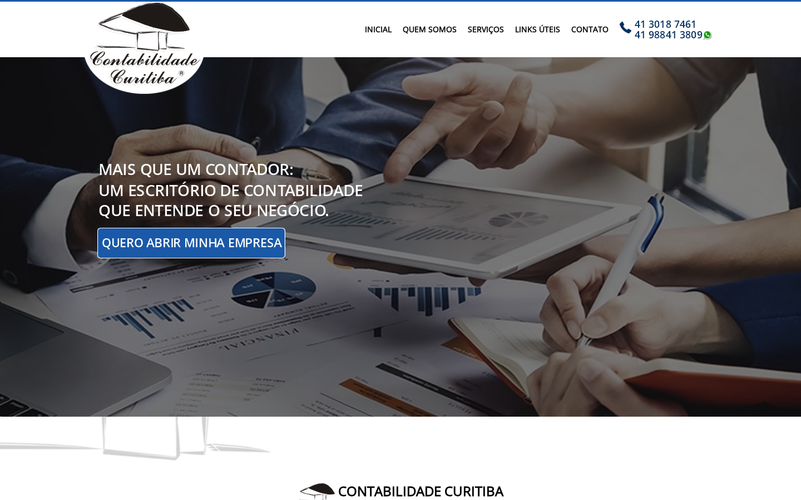
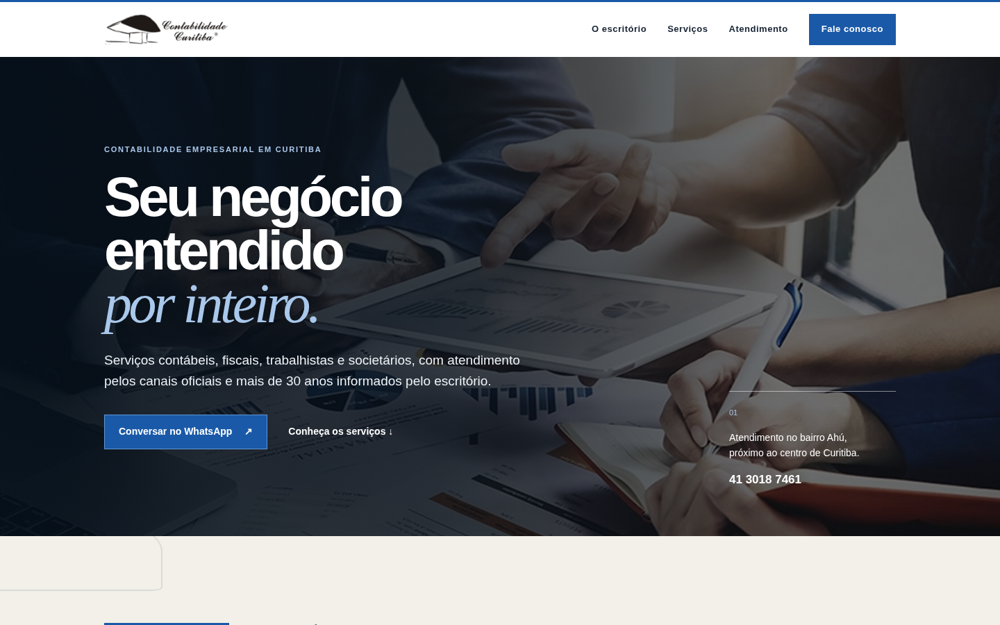

Recuperar a descoberta
Problema: o robots.txt oficial aponta para o sitemap de karolinebettes.com.br, enquanto o sitemap local registra datas de 2020.
Melhoria: corrigir indexação, metadados e estrutura de páginas por intenção de serviço.
Oportunidade
A Contabilidade Curitiba já publica os ativos mais valiosos da sua história: mais de 30 anos de atuação, atendimento próximo e uma oferta completa. A oportunidade é fazer essa credibilidade chegar mais rápido a quem procura orientação.
Sem depender de alegações de resultado, métricas inventadas ou formulários que coletem dados sem contexto.
Leitura visual


Três prioridades
Problema: o robots.txt oficial aponta para o sitemap de karolinebettes.com.br, enquanto o sitemap local registra datas de 2020.
Melhoria: corrigir indexação, metadados e estrutura de páginas por intenção de serviço.
Problema: grandes vazios e seções quase sem conteúdo interrompem a leitura antes de serviços e contato.
Melhoria: criar uma narrativa contínua: posicionamento, credenciais, frentes de atuação e conversa.
Problema: o formulário incorporado exibe campos sem rótulos visíveis, e a rota de privacidade testada não está disponível.
Melhoria: priorizar contato direto; se houver formulário, definir finalidade, consentimento, retenção e política de privacidade.
Entregáveis
Confirmação do registro/razão social a publicar, revisão dos textos técnicos, responsável por privacidade, acesso a domínio/hospedagem e aprovação dos canais de contato.
Descoberta → conteúdo → direção visual → implementação → revisão técnica e legal → publicação.
Fontes: domínio oficial, robots.txt, sitemap.xml, HTML e capturas locais. A indisponibilidade de uma rota de privacidade deve ser reconfirmada antes de publicação.